Fase 4 · La tanda final · Con esto se cierra el producto
Las siete
que faltaban
El alta desde el panel, la asistencia del socio, agregar un dependiente, las preguntas frecuentes, las dos pantallas de recuperar contraseña y la de sin permiso. Capturadas contra el entorno de QA a 1440×900, con el mismo guión de medición que las trece anteriores. Catorce estados, antes y después. El diagnóstico salió de leer las siete contra DESIGN.md y sus reglas con nombre, como en las dos tandas anteriores: ninguna de las siete tenía issue que la midiera.
La consigna de la fase —cambia cómo se ve, no qué hace— se cumple con la
suite entera en verde: 3169 tests en 190 archivos, ningún endpoint tocado,
ninguna regla de negocio movida. Vale doble en dos de estas siete:
/forgot-password y /reset-password son credenciales,
así que ninguna validación, ningún flujo y ningún mensaje de seguridad se tocó — el
contrato anti-enumeración del backend, la política de contraseña de ocho caracteres y la
lista de reglas en vivo están exactamente como estaban, y lo único que cambió ahí es de qué
color son dos bordes, con qué receta se dibujan dos enlaces y cuántas veces se nombra un
mismo destino.
1 · El diagnóstico, por gravedad
Catorce hallazgos, ordenados por lo que le cuestan a la persona que usa la pantalla y no
por lo que cuestan de arreglar. Cada uno nombra la regla de DESIGN.md que
rompe. Los catorce se arreglaron.
-
48% de aire muerto en la primera pantalla que abre un socio nuevo.
La regla del aire · La regla del estado flaco/student/attendancecon cero sesiones registradas medía 434px de lienzo desnudo bajo una tarjeta que terminaba a los 466 — el número más grande de esta tanda y el segundo del rediseño entero. Es exactamente la forma que la tanda 1 cerró en las otras tres pantallas del socio:AppShellestira<main>al alto de la ventana y ningún hijo de primer nivel reclamaba el sobrante. Y encima la pantalla decía dos veces lo mismo — «Todavía no hay sesiones registradas» en el riel, «Aún no hay asistencias registradas» en la lista, a doscientos píxeles uno del otro— sobre un recuento de cuatro ceros. -
Doce cadenas de texto por debajo de AA, cuatro de ellas bajo 3:1.
La regla del par medido/admin/crear-cuentaapagaba la tinta con un alfa en lugar de nombrar un escalón de la rampa:cata-text/45mide 2.67:1 sobre papel,/40mide 2.36:1 y/50mide 3.05:1. Seis de las ocho eran los rótulos del resumen, así que las palabras que nombran cada bloque de la cuenta que está por crearse eran lo menos legible de la pantalla. En/student/add-dependent, dos colores de la paleta cruda de Tailwind:text-blue-700/80a 3.84:1 sobre el lienzo ytext-amber-700/80a 3.25:1 sobre su propio tinte. Y en/reset-password,text-cata-redcomo enlace de la letra chica: 4.10:1 sobre canvas, a 10,5px. -
Dos controles al mismo destino, con dos nombres, a sesenta píxeles.
El estado de enlace vencido de
La regla de la acción · La regla de las palabras · Enlaces/reset-passworddibujaba un botón rojo de ancho completo que decía «Solicitar nuevo enlace» —con una flecha hacia atrás sobre un control que va hacia adelante— y justo debajo, en la letra chica, «Pedir uno nuevo». Los dos apuntaban a/forgot-password. Es el «un botón por acá y otro por allá» del cliente en su forma más literal, y de paso dos etiquetas que se deducen una de la otra. Los dos botones estaban además escritos a mano —inline-flex h-ctl … bg-cata-red—, o sea una decimonovena copia de una receta que el producto ya exporta. -
El rojo como estado seleccionado, encima del rojo que ya era identidad.
Las cuatro tarjetas de tipo de cuenta dibujaban su selección con
La regla del rojo únicobg-cata-red/10+ring-cata-red/20+border-cata-red/40, y la regla lo prohíbe con esas palabras: «Nunca es un estado seleccionado […] Un estado activo se dibuja con caucho más el punto amarillo.» Peor: «Jugador» llevacata-red/15como su categoría —declarado y medido entailwind.config.ts—, así que elegirlo pintaba rojo sobre rojo, uno por identidad y otro por selección, y ninguno de los dos se distinguía del otro. -
Dos marcadores contradictorios de obligatoriedad, en el mismo paso.
El paso de salud de
La regla del rojo único · Ningún cuarto vocabulario/student/add-dependentdibujaba «Tipo de Sangre *» —el asterisco rojo quewizard-fields.tsxretiró, con su porqué escrito— ochenta píxeles encima de dos campos marcados «(opcional)» por el reemplazo. La misma pantalla marcaba lo obligatorio de una manera y lo opcional de la otra, y había que aprender las dos para leer cualquiera de las dos. -
Cinco «p. ej.» contra cuatro «Por ejemplo:», a veces en la misma tarjeta.
La abreviatura es lo único que «la regla de las palabras» prohíbe de plano, y
La regla de las palabrasexample()existe justamente para que nadie la vuelva a escribir. En el paso de salud del asistente del representante las dos convenciones se veían a la vez: «p. ej. Asma, diabetes» en el campo de enfermedades y «Por ejemplo: María Rodríguez» ochenta píxeles más abajo, en el contacto de emergencia. -
El id de cada campo salía del texto de su etiqueta, en los dos asistentes.
Es la deuda que el faro 2 cerró con
Deuda anotada del faro 2ENROLL_FIELD_TOKENy que estas dos pantallas no habían pagado. Ninguno de los sieteWizardInputde/admin/crear-cuentadeclaraba unfield, así queslugifyLabelconstruía el id con la copia visible: «Fecha de Nacimiento» daba#crear-cuenta-fecha-de-nacimientomientras el mismo campo en los otros dos asistentes es-fecha-nacimiento, y «Contraseña» daba-contrasenacontra-contrasenia. Dos de los renombres que esta tanda hace —sacar las mayúsculas de título, poner los acentos— habrían movido un id cada uno, en silencio. -
Diez iconos rojos decorativos en un asistente con un solo botón rojo.
Uno por encabezado de paso y uno por bloque del resumen, todos
La regla del rojo únicotext-cata-red. El rojo es la acción primaria y el estado destructivo y nunca decoración; a los diez, el único control que lo había ganado —«Crear cuenta»— competía con diez adornos del mismo color. -
Una tarjeta centrada debajo de tres controles alineados a la izquierda.
La regla del aire/admin/crear-cuentaponía su tarjeta de formulario conmx-auto max-w-2xl, así que su borde izquierdo caía en x=502 mientras el título de la pantalla, el control de volver y la barra de progreso arrancaban todos en x=262. Cuatro piezas de una pantalla sobre dos ejes distintos: el «cosas desalineadas» del cliente en su forma más simple. Y las cuatro tarjetas de tipo, enlg:grid-cols-4dentro de una columna de 672px, quedaban con 138px de caja de contenido: dos de los cuatro títulos partidos a la mitad y todas las descripciones en cuatro o cinco renglones. -
La pantalla de éxito reservaba tres cuartos de la ventana.
La regla del aire · Enlacesmin-h-[75vh]alrededor de cuatro renglones cortos — la misma forma que la tanda de inscripción ya había sacado de su propia pantalla de éxito. Y su acción primaria era un<button>que llamaba arouter.push: un control que cambia la barra de direcciones vestido con la única forma que el sistema le reserva a algo que no navega, así que no se podía abrir en otra pestaña ni leer como destino. -
Dos vocabularios de progreso para un solo trabajo.
Ningún cuarto vocabulario · La regla del rojo único/student/enrolly/student/add-dependentdibujanStepper—pastillas con el nombre de lo que cada paso pregunta— y/admin/crear-cuentadibujaba una barra roja rellena más «Paso 1 de 5», que es el mismo dato en forma de porcentaje y no le dice a nadie qué pide el paso cuatro. El que cargaba menos información era además el que gastaba el color de la acción en una decoración. -
Trece radios de 12px y uno de 8, en pantallas que tienen dos.
Dos radios y nada más · La regla del par medidorounded-xldoce veces en/admin/crear-cuenta, una en/student/add-dependenty una en/ayuda, más unrounded-lgy cuatroborder-2que el sistema tampoco tiene. Con ellos venía la paleta retirada entera: cincocata-border, cuatrocata-surfacey veinticincocata-text— más que en cualquier otra pantalla del producto. -
La caja verde de «correcto» envolviendo un formulario que no acertó nada.
Los cinco campos médicos de
La rampa de estados · Ningún cuarto vocabulario/admin/crear-cuentavivían dentro debg-state-ok-bgcon bordestate-ok— el tinte de éxito de la rampa de estados, gastado en un formulario vacío. Un color de estado que no describe ningún estado es el vocabulario filtrándose. Lo que ese bloque necesitaba era un límite, y para eso el sistema tiene la hairline sobre el escalón hundido. -
Seis títulos de tarjeta fuera de Graduate, y un puñado de acentos perdidos.
Tres en
La regla de Graduate · La regla de las palabras · La regla del formato/ayuday uno en/student/add-dependent—este último atext-sm, 13,5px, más chico que las etiquetas de los campos de la tarjeta que titula—. El candado de tipografía no los ve: su regla se dispara sobre un encabezado que ya está en el paso de título, así que un título un escalón por debajo del piso pasa por ser demasiado chico, no por cumplir. Con ellos, «Fecha de Nacimiento», «Tipo de Sangre», «Ficha Medica», «Telefono Emergencia», «Iniciar Sesión» y «Crear Otra Cuenta»: mayúsculas de título y dos acentos faltando, en pantallas cuyos otros rótulos escriben «Nombre del contacto». Y una fecha cruda,1998-03-20, en la última pantalla antes de crear la cuenta.
2 · Las mediciones
Se mide igual que siempre: la distancia entre el borde inferior del contenido más bajo y el fondo de la ventana, dividida por el alto de la ventana, a 1440×900. Las dos rondas leen la misma base de QA y entran con la misma cuenta.
| Pantalla | Estado | Antes | Después | Qué lo movió |
|---|---|---|---|---|
| Crear cuenta | Paso 1 · Tipo | 29% · 263px | 19% · 173px | Las cuatro tarjetas en 2×2, y la tarjeta a la izquierda. |
| Crear cuenta | Paso 3 · Salud | 5% · 47px | 0% | Scrollea: el enunciado dice qué vuelve obligatorio qué. |
| Crear cuenta | Paso 5 · Resumen | 0% | 0% · 4px | Scrollea en los dos lados. |
| Agregar dependiente | Paso 1 · Datos | 5% · 43px | 4% · 38px | Scrollea. Lo que cambió acá no es alto. |
| Agregar dependiente | Paso 3 · Salud | 4% · 33px | 3% · 28px | Scrollea. Un marcador menos, una convención menos. |
| Agregar dependiente | Paso 4 · Resumen | 3% · 31px | 3% · 31px | Scrollea: 1116px → 1121px de documento. |
| Asistencias | Jugador con 24 sesiones | 0% | 0% | Scrollea: 1626px → 1628px de documento. |
| Asistencias | Socio nuevo, cero sesiones | 48% · 434px | 4% · 32px | El registro reclama el sobrante — ver abajo. |
| Preguntas frecuentes | Sin sesión | 2% · 14px | 0% | Scrollea, y el documento baja 28px. |
| Recuperar contraseña | Formulario en reposo | 23% · 204px | 23% · 204px | Sin cambios: la tarjeta está centrada en el eje. |
| Recuperar contraseña | Enlace enviado | 24% · 217px | 24% · 217px | Sin cambios. Esta pantalla ya estaba bien. |
| Elegir contraseña | Formulario con token | 16% · 148px | 16% · 144px | El halo del error se fue; el centrado manda. |
| Elegir contraseña | Enlace no válido | 26% · 238px | 26% · 238px | Un control menos y una nota más corta se compensan. |
| Sin permiso | Cuenta sin rol | 34% · 303px | 34% · 303px | No se tocó — ver la sección 8. |
El hueco bajó de 434px a 32px, y eso es real: la tarjeta del registro
reclama ahora el alto que <main> ya tenía reservado, con el enunciado
centrado adentro. Pero el sobrante entró a la superficie en lugar de
desaparecer: la tarjeta mide unos 600px y cerca de 460 de esos son blanco dentro del
borde. Es el mismo movimiento —y la misma contrapartida— que /members midió
en su búsqueda sin resultados y que /student/payments midió en su historial
vacío, y por eso está escrito acá en vez de celebrado como un 4% limpio.
Las dos alternativas se descartaron con su motivo. No estirar deja 53% de lienzo desnudo —peor que el 48% de partida, porque el riel que se fue también ocupaba alto—. Y lo único que llenaría ese hueco con contenido verdadero es el horario semanal del alumno, que este archivo tiene prohibido mostrar por escrito desde que se creó: mezclar «lo que se registró» con «lo que viene» es lo que hacía que el portal viejo imprimiera una sesión pasada bajo un título que la familia lee como la próxima.
3 · Asistencias — el 48% del socio nuevo
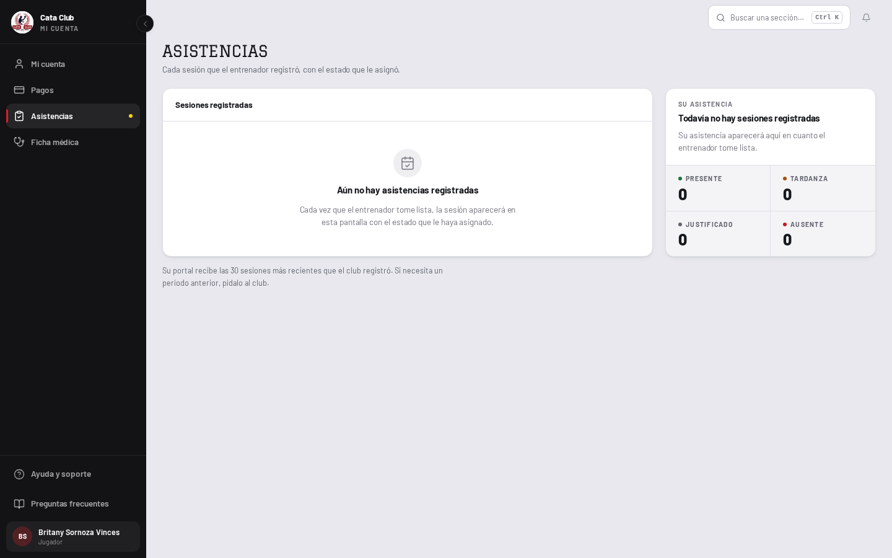
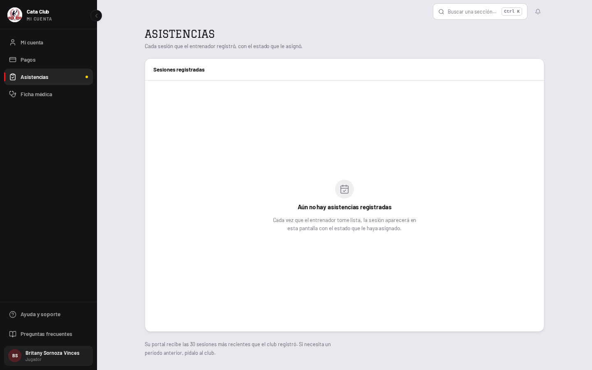
El riel deja de dibujarse cuando no hay nada que contar. La tarjeta del
recuento existe para decir «asistió a X de N» y desglosarlo en cuatro estados; con cero
sesiones decía «Todavía no hay sesiones registradas» sobre cuatro ceros, que es la misma
frase que la lista de al lado y un recuento de nada. Es el movimiento que
/student/payments ya hizo cuando el bloque que justificaba su riel se fue
detrás de «Ver ayuda»: una columna de 340px conservada por sí misma es exactamente el
error contra el que advierte el propio comentario de PAGE_RAIL. Con datos, el
riel vuelve y es incondicional otra vez — hay un test para cada una de las dos mitades.
-
El estirón es condicional, y eso está medido en otra pantalla.
La tarjeta reclama el sobrante solo cuando no tiene nada que listar. Estirarla siempre ya se midió y se rechazó en
/student/payments: con una sola fila adentro, la tarjeta llega al pie de la ventana y dibuja un marco vacío bajo un renglón, que es el mismo hueco metido adentro de un borde y hecho más visible que el lienzo que reemplaza. Hay un caso para cada lado. -
Y la pantalla entra al grupo de las que no pueden llenarse.
measure="short"(1024px en lugar de 1408), que es la respuesta que/discounts,/groups, la ficha médica y los pagos del socio ya tienen. El criterio de admisión no es «se ve más prolijo angosto» sino una lectura: el alto de esta pantalla es función de cuántas sesiones existen —el portal entrega una ventana acotada y no hay paginador debajo—, que es la misma forma que/student/payments. La lista y su lectura están enlib/__tests__/content-measure.test.ts, que es donde entra el número.
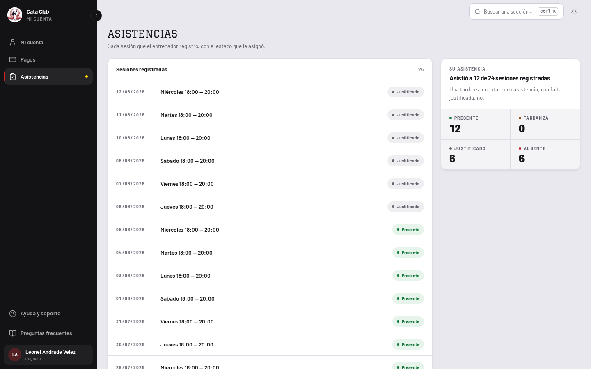
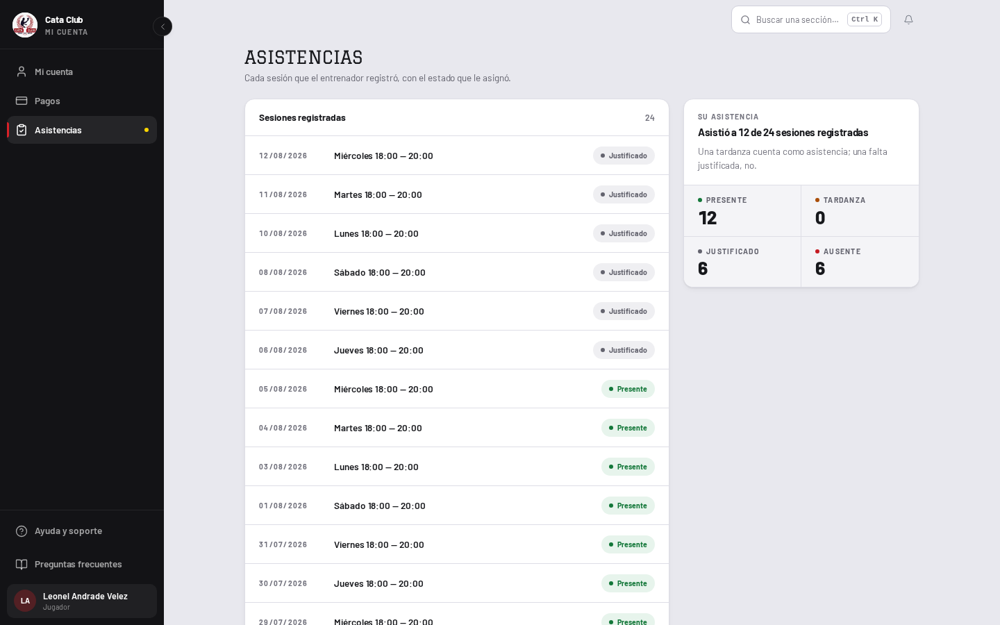
4 · Crear cuenta — la pantalla con más sistema retirado del producto
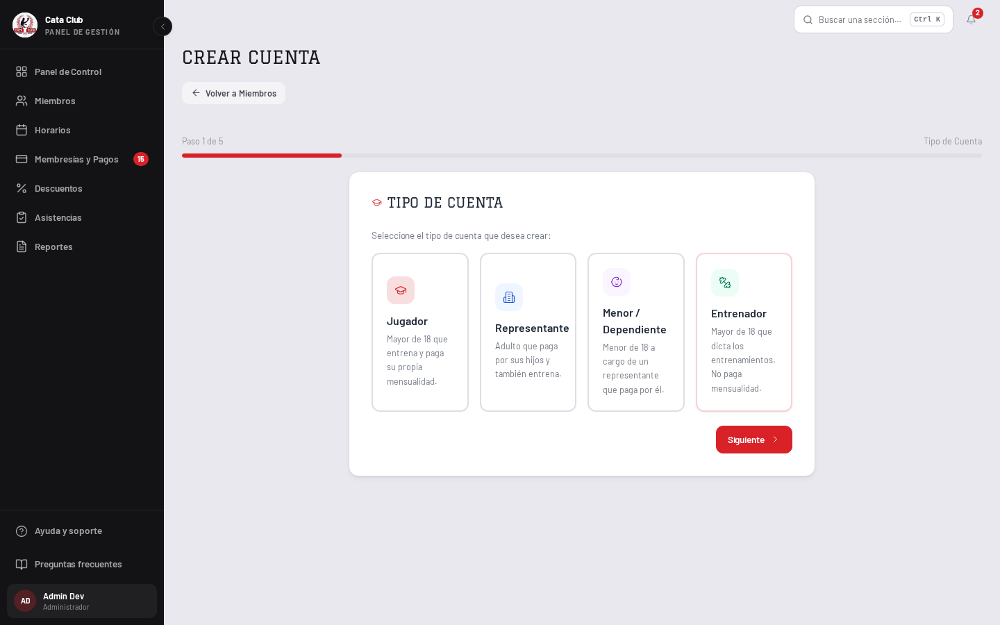
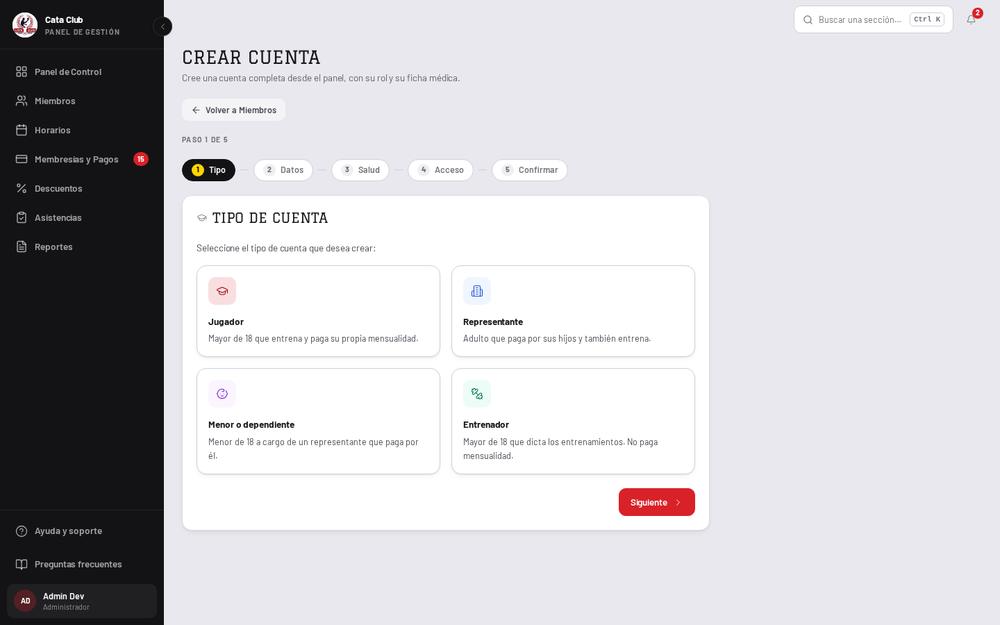
-
Los cuatro colores de categoría no se tocaron.
Son la única parte del producto donde el color carga categoría y no estado, y están declarados y medidos como pares en
tailwind.config.ts, con el motivo escrito:state-okverde sobre «Entrenador» diría que la cuenta está sana, no que entrena. «Jugador» llevando el acento del sistema al/15también está anotado ahí y también se queda. Lo que cambió es el estado seleccionado, que era rojo y por lo tanto se pisaba con el rojo que ya era identidad. -
La selección es caucho más el punto amarillo, que es la regla y ya tenía dueño.
FilterPilles el primitivo que la posee, y su receta esbg-coal border-coalcon un punto de 6px enball. Acá la tarjeta se queda en papel —adentro vive un chip de color que un relleno de caucho taparía— y toma el borde de caucho más el punto. Elaria-presseddice lo mismo para quien no ve ninguno de los dos. -
Las cuatro tarjetas se escriben una sola vez.
Eran cuatro bloques
<button>casi idénticos, con la misma cadena de cuarenta caracteres repetida cuatro veces — que es exactamente por qué la piel de selección llegó a ser roja en cuatro lugares a la vez y por qué cambiarla significaba cambiarla cuatro veces. Ahora son una tabla y unmap.
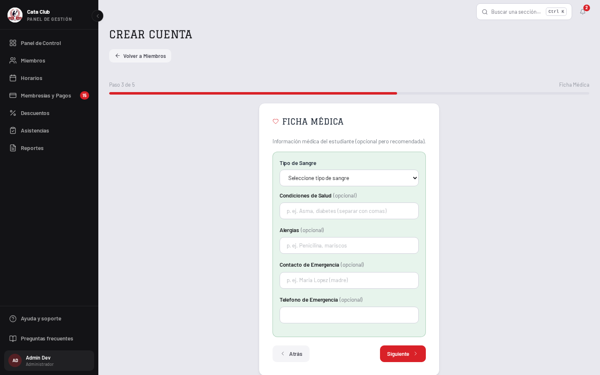
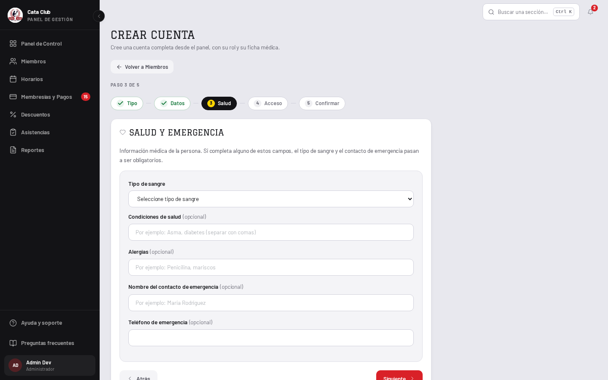
El enunciado del paso de salud dice ahora lo que la validación siempre hizo.
validateMedical es explícito: si se completa cualquiera de los cinco
campos, el tipo de sangre y el contacto de emergencia pasan a ser obligatorios. La
pantalla decía «opcional pero recomendada» y nada más, así que el admin que elegía un tipo
de sangre para ser prolijo se encontraba con dos errores nuevos al apretar «Siguiente».
No se cambió una sola regla — se escribió la que había. Decir en voz alta
una condición que el código ya aplica es forma, no comportamiento.
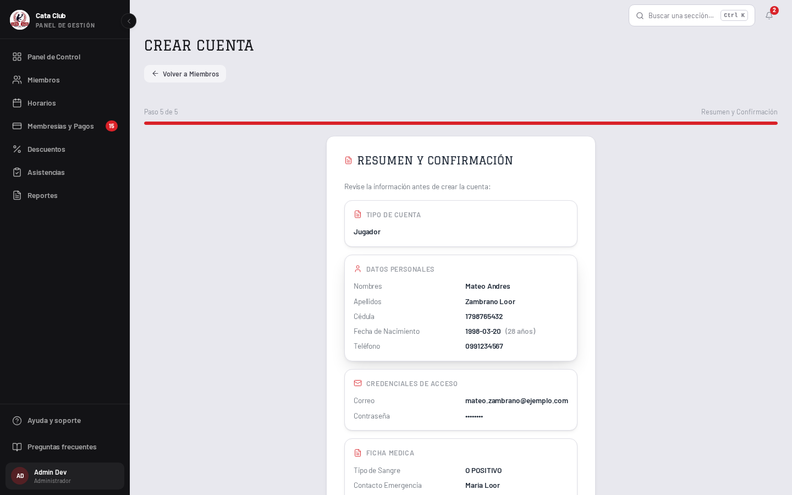
cata-text/45: 2.67:1, lo menos legible de la pantalla, sobre la información que el admin está por confirmar. Cinco iconos rojos, cuatro tarjetas dentro de una tarjeta, «Ficha Medica» sin acento y la fecha cruda 1998-03-20.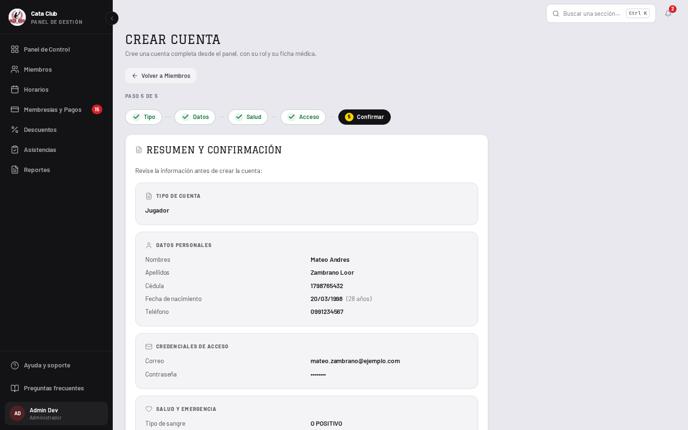
ink-3-strong (5.24:1), los iconos en tinta apagada, los bloques como áreas hundidas dentro de la tarjeta —no tarjetas adentro de una tarjeta— y la fecha en 20/03/1998, que es el formato que el resto del producto imprime.5 · Agregar dependiente — dos marcas y dos vocabularios en un paso
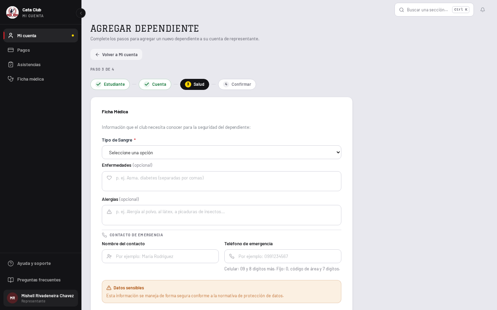
required sigue en el control, que es el atributo que un lector de pantalla realmente lee—. Un vocabulario de ejemplo. Y «Salud y emergencia» en Graduate, con las mismas palabras que usan los otros dos asistentes para el mismo paso.-
Los tres asistentes nombran cada paso igual.
«Ficha Médica» era el nombre del registro; el paso pregunta por la salud y por a quién llamar, que es lo que dice «Salud y emergencia» — el rótulo que
/student/enrollya usaba para las mismas cuatro preguntas. Con él se fueron las mayúsculas de título y el «(Opcional)» del rótulo de la cuenta de acceso, que repetía la marca que los dos campos de adentro ya llevan. -
Los dos avisos salieron de la paleta de Tailwind.
text-blue-700/80sobre el lienzo mide 3.84:1 ytext-amber-700/80sobre el tinte de advertencia mide 3.25:1 — los dos bajo AA, y los dos de una paleta con la que este producto no pinta. Ahora sonink-2ystate-warn, que son los tokens que esas dos cajas ya llevaban a medias. Con eso,/student/add-dependentsale de la lista congelada de deuda de paleta cruda decolor-contrast.test.ts, y esa lista encoge — que es literalmente lo que ese caso existe para forzar. -
Y el id del tipo de sangre dejó de venir de su etiqueta.
Era
#add-dependent-tipo-de-sangre, escrito a mano para coincidir con lo queslugifyLabelhabría producido a partir de «Tipo de Sangre» — mientras el campo idéntico del asistente público es#enroll-tipo-sangre. Dos nombres para un campo, producidos por dos escrituras de un rótulo.ADD_DEPENDENT_FIELD_TOKENlos declara, y usa las mismas cadenas que los otros dos asistentes.
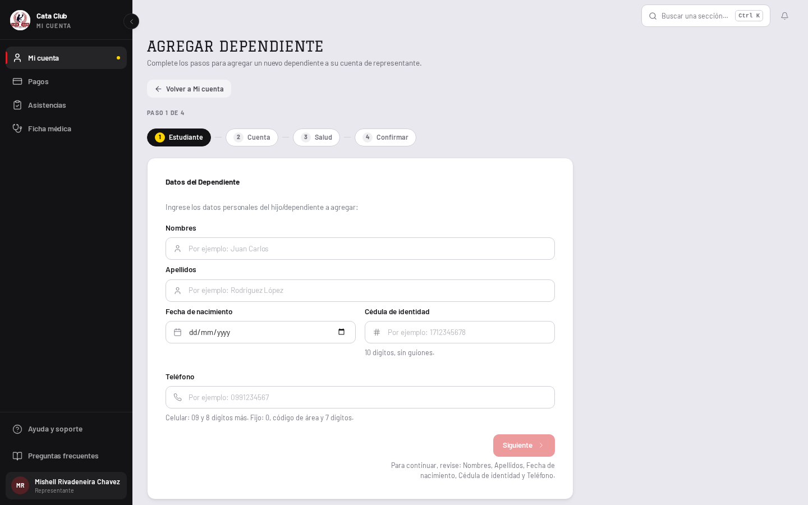
div vacío que el ritmo de la página contaba como un bloque, y las etiquetas de los dos selectores de escuela en mayúsculas de título contra el resto de la pantalla en minúsculas.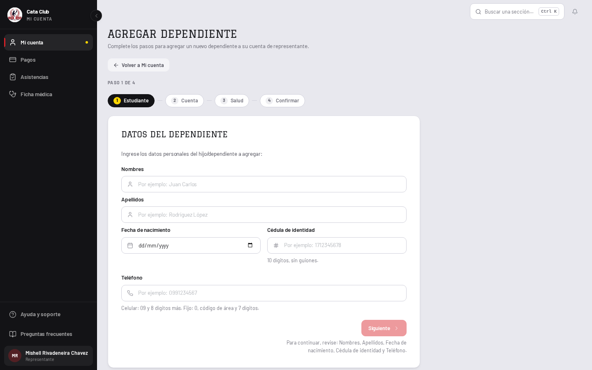
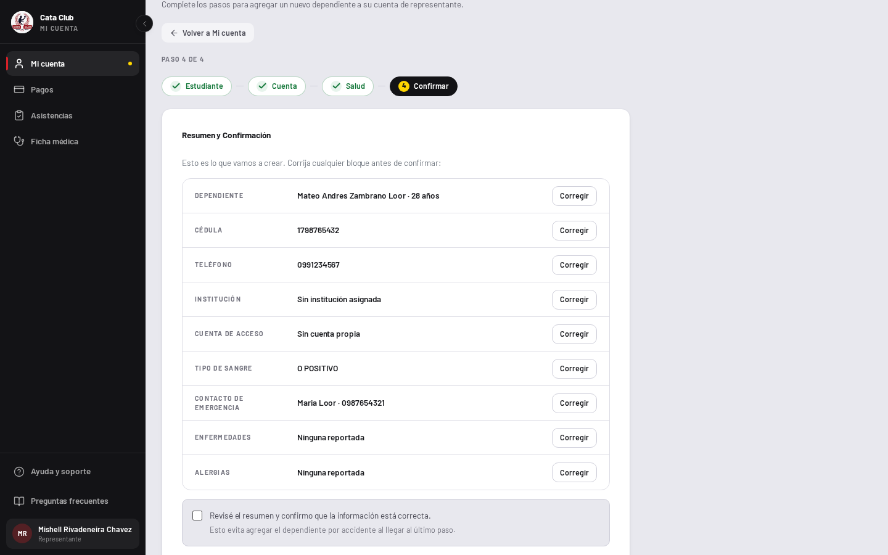
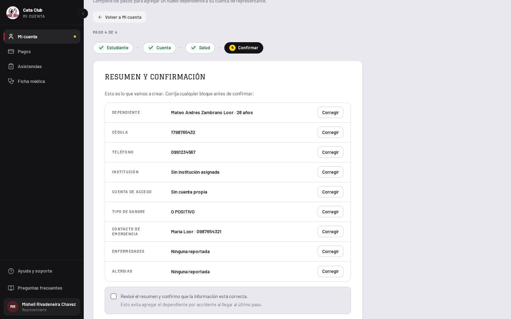
6 · Las dos de credenciales
Acá la consigna vale doble y por eso conviene decirlo antes de las capturas: ninguna validación, ningún flujo y ningún mensaje de seguridad se tocó. El contrato anti-enumeración —que la respuesta sea idéntica esté o no registrado el correo—, la política de ocho caracteres que el backend declara, la lista de reglas en vivo y el estado de enlace vencido están exactamente como estaban. Los 26 tests de las dos pantallas pasan sin que se renegociara uno solo de comportamiento.
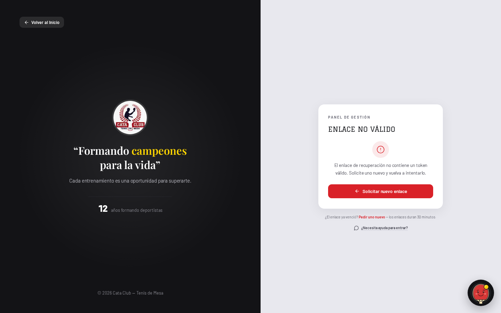
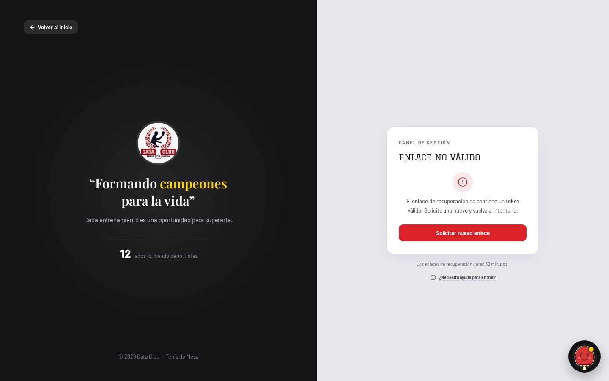
-
La piel del enlace vivía en un archivo y por eso había dos.
AUTH_LINK_CLASSES—cata-red-dark, subrayado, con el desplazamiento del subrayado declarado— estaba escrito dentro delogin/page.tsx. La pantalla de al lado, que hereda el mismo shell, escribió la suya:font-semibold text-cata-red, sin subrayar. Dos pantallas de una misma plantilla con dos respuestas a «cómo se ve un enlace acá». La receta se mudó aAuthShell, al lado de las de campo y etiqueta que esas cuatro pantallas ya compartían, y las dos la leen de ahí. -
El error del campo repetido dejó el rojo de acción y su halo.
border-cata-red ring-[3px] ring-cata-red/10— el par exacto queWizardInputretiró una tanda antes, con su porqué anotado: el rojo de acción como borde le dice «apretame» al único campo que la persona escribió mal, y un rojo translúcido compone entre 1.27:1 y 1.96:1, que es decoración y no un indicador. Acá seguía vivo, que es como sobrevive un tratamiento retirado: se arregló donde se notó, no donde se declaró. -
Y el
focus:border-cata-redse queda, a propósito.Ese sí es el campo reaccionando, un cambio de estado medido en 5.00:1 sobre papel que
AuthShelldocumenta. El candado nuevo mira el borde en reposo, no cualquier aparición de la cadena: prohibir el token entero habría borrado un indicador medido para satisfacer una regla que no habla de él.
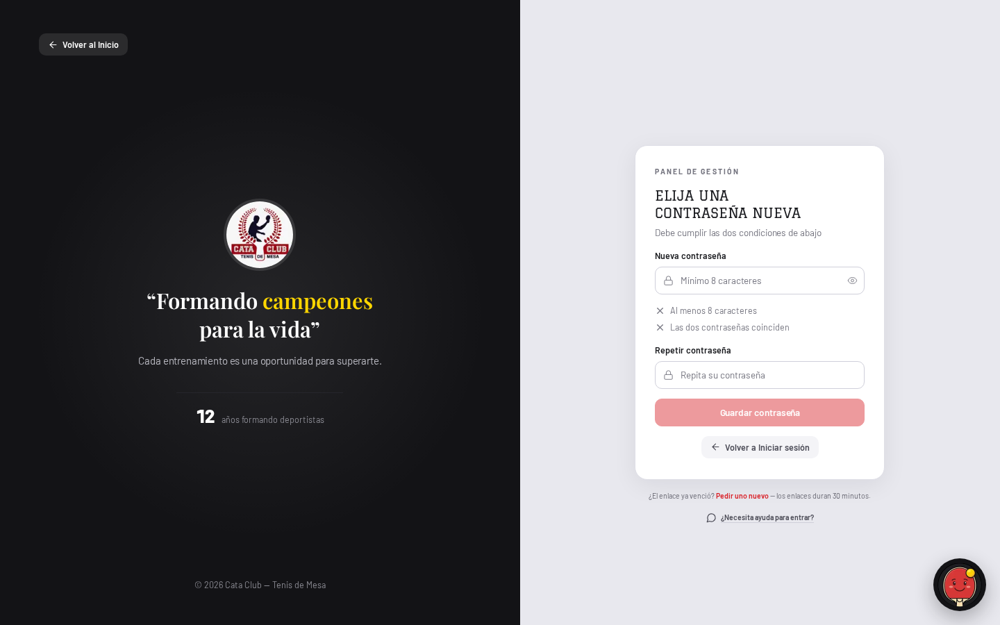

AuthShell entero, usa el campo y la etiqueta compartidos, tiene una acción primaria y su nota dice lo que solo ella sabe.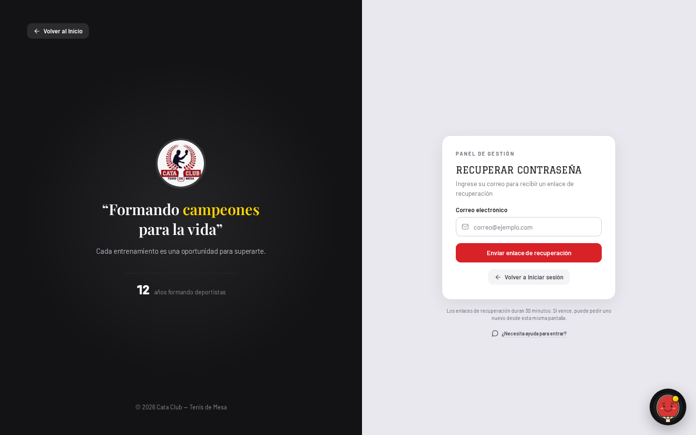

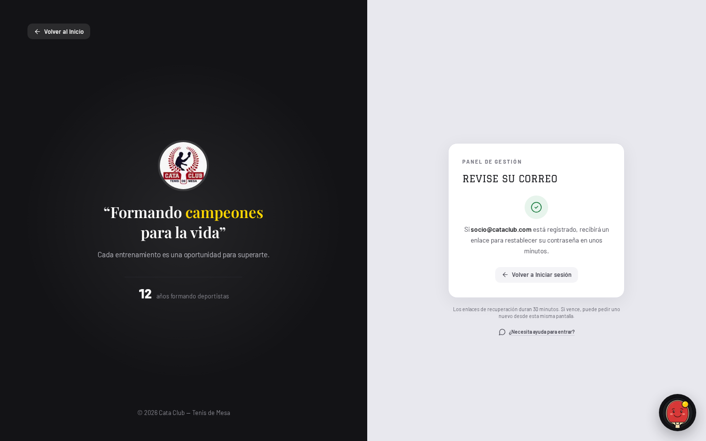
7 · Preguntas frecuentes — lo que ya estaba bien, y lo que no
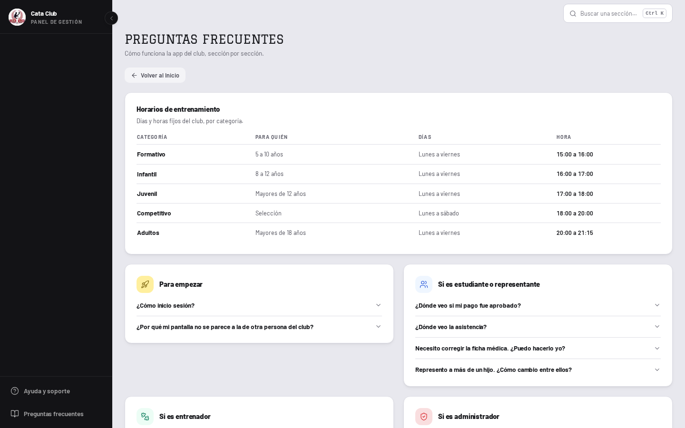
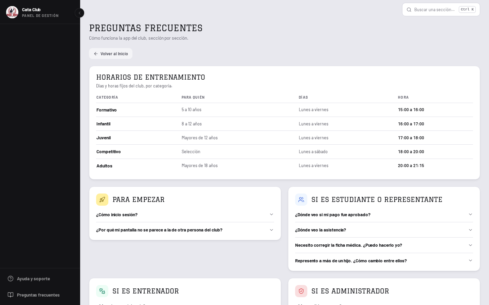
-
Se revisó primero si hacía falta tocarla, y la respuesta fue «casi no».
/ayudase rehízo hace poco (commiteace106) y esa tanda cerró lo que importaba: un solo «Volver al Inicio» con la piel canónica, la grilla que colapsa a una columna sin partir una sección, la tabla de horarios primero porque es la única respuesta que se lee de un vistazo en vez de leerse. Quedaban tres cosas, y las tres son de sistema, no de estructura. -
El candado de tipografía no podía verlo.
display-face-usage.test.tsdispara sobre un encabezado que ya está en el paso de título (20px) y sigue en la cara de interfaz. Estos estaban atext-baseytext-sm, o sea pasaban por estar debajo del piso de Graduate, no por cumplirlo — el mismo mecanismo por el que la tanda del admin encontró cerofont-displayen cuatro pantallas. -
Los cuatro colores de audiencia se quedan.
Son los mismos tokens de categoría que
/admin/crear-cuenta, declarados y medidos, y acá cumplen el mismo trabajo: que la grilla se lea como un conjunto de audiencias y no como una pared de tarjetas iguales. El rojo del chip de administrador es uso de icono —3:1, no el piso de 4.5:1 del texto— y así está anotado en el archivo desde que se escribió. -
Y el «¿No encontró lo que buscaba?» del pie se queda en Barlow.
No es una tarjeta: es un área hundida con hairline, y su encabezado es una pregunta dirigida al lector, no el nombre de un bloque. «Si dudás, es Barlow.»
8 · Sin permiso — se miró y no se tocó

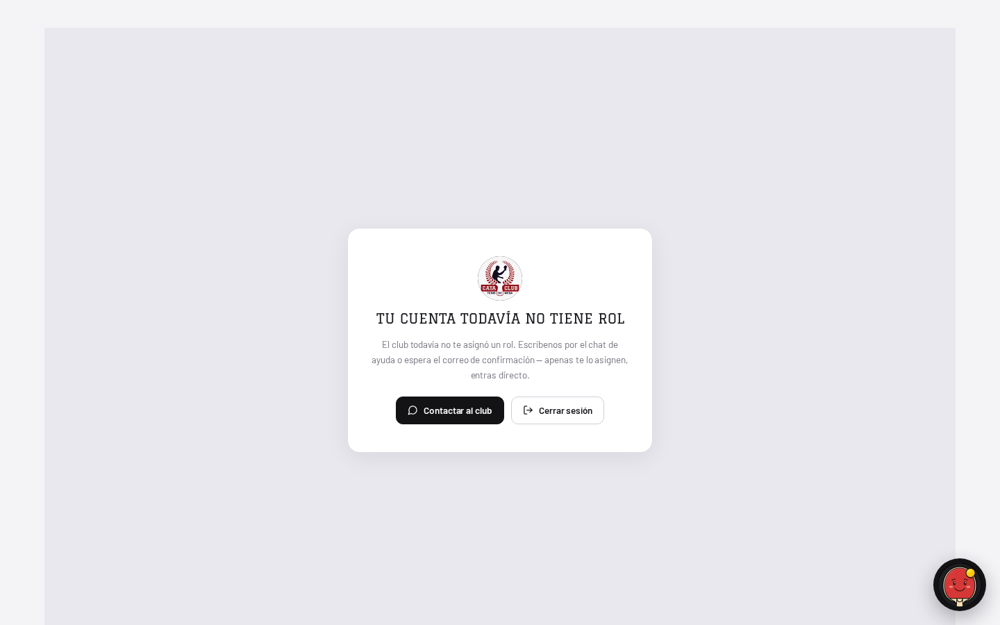
-
Los dos «valores raros» que tiene son los dos que debe tener.
rounded-[18px]yshadow-heroparecen un tercer radio y una sombra suelta, y no lo son:DESIGN.mddice que la sombra hero es para «una tarjeta sola sobre el canvas sin cromo alrededor» y que existen exactamente dos en el producto. Un grep confirma las dos: la tarjeta deAuthShelly esta. Son el mismo objeto en dos rutas, y por eso llevan la misma medida. -
Su acción enfática es caucho, que es exactamente la regla.
«Contactar al club» abre el asistente y no es ni la acción primaria de un flujo ni algo destructivo, así que lleva la variante
dark— «la acción enfática que no debe ser roja». Al lado, «Cerrar sesión» en secundaria. Una pantalla con dos controles y ningún rojo, correctamente. -
Cómo se capturó, ya que ninguna cuenta de QA está en ese estado.
Esta pantalla solo la alcanza una cuenta autenticada cuyo arreglo de roles esté vacío, y las 82 cuentas de QA tienen rol. Para las dos tomas se le quitó el rol a una cuenta de alumno sin asistencias ni pagos y se le devolvió inmediatamente después, verificando en la base que volvió — dos veces, una por ronda. No se creó ninguna persona, no se borró ningún dato y el estado final es idéntico al inicial.
9 · El candado nuevo, y las cuatro deudas que cierra
-
La rampa de tinta es cuatro tokens, no un control de opacidad.
lib/__tests__/ink-ramp-usage.test.tsbarre el producto entero y falla, nombrando archivo y valor, si vuelve a aparecertext-cata-text/30,/35,/40,/45o/50— los cinco escalones que miden bajo 3.1:1 sobre todas las superficies del producto. La línea está donde la pone la medición y no en un número redondo:/65mide 4.72:1 sobre papel, pasa AA, y se queda donde está, porque prohibirlo acá sería una regla que dispara sobre archivos que esta tanda no puede tocar. -
Y arreglarlo salió de las siete pantallas, a propósito.
Los escalones bajo AA vivían en seis archivos más: la campana de notificaciones (cuatro), el buscador de alumnos (tres), la confirmación de mayoría de edad (uno) y el placeholder de
.input-fieldenglobals.cssa 2.09:1 — que es el campo de los dos asistentes de esta tanda y de media docena de pantallas más. Un candado que hubiera dejado once cadenas bajo AA afuera para no salirse del alcance no habría sido un candado, así que las once entraron. Ninguna es un cambio de forma: es el mismo gris, nombrado. -
La lista congelada de paleta cruda encogió.
color-contrast.test.tstiene un caso cuyo único trabajo es fallar cuando un archivo de la lista de deuda ya no debe nada. Falló, y a favor:/student/add-dependentpagó sus dos entradas y salió. Es el segundo archivo que sale de esa lista —el primero fue/groups, en la tanda del admin— y el mecanismo funcionó las dos veces. -
Y la lista de pantallas de medida corta creció, con su lectura escrita.
content-measure.test.tsno deja adoptar ni soltarmeasure="short"sin tocarlo, que es el punto./student/attendanceentra como quinta, con el mismo criterio que las cuatro anteriores —su alto es función de cuántos registros existen, no de un tamaño de página— y con el número que lo motivó anotado ahí: 434px, 48%, a 1440×900, sobre un socio nuevo.
10 · Lo que no se tocó, y por qué
-
Los dos títulos de tarjeta que quedan en Barlow, en el socio.
/studenty/student/paymentsescriben los suyos atext-sm font-bold, igual que escribía/student/attendancehasta esta tanda. Las dos se aprobaron en la tanda 1 y esta tanda no reabre una comparación aprobada; moverlos es una tanda de tipografía sobre las dos, no dos líneas sueltas. Queda anotado acá, que es donde se busca un pendiente. -
Los once
rounded-xlde la cabecera del shell.components/Header.tsxsigue con el radio de 12px en su cromo, y aparece en las catorce capturas de esta tanda porque aparece en todas. Es un archivo de la fundación (F1) y de otra tanda: el candado de radios que esta tanda escribe está acotado al formulario de cada asistente justamente para no pedirle a un test de pantalla que arregle el shell. Anotado. -
El «Paso N de M» encima del stepper, en los tres asistentes.
Se puede deducir del propio stepper, y por eso parece sobrar. Se queda porque los tres asistentes lo tienen y porque
/student/enrolltiene escrito el motivo al lado: llegar desde la landing a un asistente ya empezado necesita una frase que diga cuánto falta antes de que las pastillas se lean. Sacarlo es una decisión sobre los tres a la vez. Lo que sí se hizo fue igualarlo:/admin/crear-cuentano lo tenía junto al stepper y ahora sí, y eldivvacío que lo envolvía en/student/add-dependentse fue. -
Los dos controles de volver de las pantallas de credenciales.
/forgot-passwordy/reset-passworddibujan el «Volver al Inicio» del panel de caucho y un «Volver a Iniciar sesión» adentro de la tarjeta. Son dos destinos distintos, los dos legítimos, y los dos usan el mismo control del sistema, que es lo que D12b pide — la regla habla del vocabulario, no de cuántas instancias hay. Sacar el de adentro dejaría a alguien sin camino de vuelta al login, que es comportamiento. -
La caja de resultados del buscador de representante.
Es un desplegable sobre el tinte de la categoría «menor», con el mismo violeta que la tarjeta que lo contiene, y funciona. Lo que le falta es lo mismo que a cualquier desplegable de búsqueda: no dice cuántos resultados trajo ni qué pasa si son más de diez, que es el techo que el cliente pide. Decirlo es contenido nuevo, no forma. Anotado.
-
El aviso de foco en el diálogo destructivo, otra vez.
Sigue abierto desde D12c: el diálogo de confirmación pone el foco de teclado en confirmar también cuando es destructivo. No aparece en ninguna de estas siete pantallas, y sigue siendo comportamiento con su issue aparte. Se repite acá porque esta es la última comparación y un pendiente que solo vive en una comparación de agosto es un pendiente que se pierde.
11 · Cómo verificarlo
Suite completa, tipos y lint sobre este cambio:
npm test — 190 archivos, 3169 tests, todo en verde (eran 187 y 3133; el neto son treinta y seis casos nuevos en tres archivos nuevos).
npm run type-check — sin errores.
npm run lint — sin advertencias.
Se renegociaron cuatro casos y los cuatro llevan el motivo escrito adentro,
que es la única forma en que un candado se puede aflojar — y tres de los cuatro
quedaron más estrictos. El de la asistencia sin registros pedía las dos
frases vacías en pantalla a la vez; ahora pide la que queda y además que no haya ninguna
proporción declarada, que es lo que el caso realmente defiende y lo que la escritura vieja
habría dejado pasar. El doble de AuthShell en el test del login devolvía
"" por sus constantes de clase: con la piel del enlace mudada ahí, eso habría
hecho pasar contra nada el caso que prueba que los enlaces se subrayan, así que ahora lee
el módulo real. Y la lista de medida corta creció con su lectura. El cuarto es la lista
congelada de paleta cruda, que encogió — y esa es la que falló a favor:
el caso pedía un cambio en el test, no en el código, porque
/student/add-dependent pagó su deuda.
Las capturas se regeneran con el guión de medición contra QA en
http://localhost:3000, a 1440×900. El índice de todas las comparaciones está en
README.md.